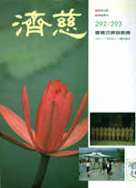

我所知道的慈济
冯冯
初次与慈济结缘，是七八年前，好像是在一九八三年吧！谢冰莹教授从三藩市写信给我，叫我为慈济基金会写一篇英文文章，介绍慈济及帮助慈济在美国注册成立美国分会。这是我接触慈济的开始。名作家谢冰莹女士的名著“女兵自传”畅销世界，有很多种外文译本。她曾经被法国名作家罗曼兰先生推崇为当代中国最伟大的女作家。她与我母亲差不多同龄，她为人慷慨慈祥，笃信佛教，与我是忘年之交。我尊称她为姨母，她有吩咐的事，我没有不遵办的。
从谢冰莹姨母寄来的资料，我才初次知道慈济基金会，而且它不同于我一向所知道的一般宗教机构，它不兴建华丽的庙宇、不做法事、不设偶像，看它的道场，只是小小的一座白色平房，陈设简陋，可是它推动遍及全台湾各地的佛法慈悲济众工作，恤孤济贫，敬老救苦救难，并且发心建立一座现代化的慈济医院！我觉得慈济功德会的宗旨与表现，都完全符合原始佛陀的教训：不建庙宇、不设偶像，六度万行以布施为先！（杂阿含经说得很明白）慈济推行“人间佛教”以佛法的大慈大悲去救助不幸的贫病，导以正信佛法所企望追求的境界。
慈济的起初创设，完全是由于证严上人的大慈大悲与坚忍的决心与毅力，她的正信与她圣洁的品德，她的苦干力行、慈悲布施，感动了社会成千成万的人，无论是否佛教徒，都自动来支持她发起的慈济，数十万人，有各行各业，各种不同的宗教信徒，大家都来参加慈济的工作，建设医院、布施医药、救助灾民贫病，渐渐汇成一股巨大的温暖的爱的力量！
研究了慈济的资料之后，我决定立即也参加慈济的工作，我没有钱也没有什么工作能力，只有先在文字上尽一点小小棉力。于是我为慈济美国分会写了英文介绍，后来据以向加州政府注了册，成为合法的慈善宗教机构。
从兹以后的多年以来，我与慈济的关系越来越密切，惭愧的我没有什么能力来支持慈济。
这七八年来，欣见慈济医院建设成功已经正式展开医疗服务，造福贫病多达十多万人，成立了巡回医疗车服务队，定期定点派出医护人员下乡深入山地僻乡去照料乡村病患，随之又成立了慈济护理专科学校，培养护理人员以应社会保健之需，现在又筹建医学院来培养医师将来参加慈济的医疗服务，又有慈济出版事业，印行正信佛法，推动社会善心，凡此都是非常有意义的贡献，为佛教树立了新的形像、新的里程碑、新的风气！这些贡献，完全符合原始佛教的宗旨，也正是现代社会所需要的现代化的佛教作为！度化众生净化人间，使人间逐渐成为净土乐园！
佛陀的度世悲心理想，是有赖于现代佛教徒大家共同努力去实践的，固然佛法八万四千法门，均可接引众生出苦成佛。为了方便接引不同众生，佛教乃有种种不同之法门，有人建庙宇、有人讲经说法、有人持咒……各有殊胜，分工合作，各有功德。
在我个人而言，我是个样样法门都尊重，不过我特别推崇慈济功德会这样的入世济世救苦救难的法门，慈济会员们在证严上人的理入行以身为教的感召之下，大家贡献力量来推动“人间佛教”的大慈大悲布施与博爱，这种无我的利众度众精神与净化人间的法门，正是我所最乐于学习追随的。

http://taipei.tzuchi.org.tw/monthly/292-293/292c6-1.htm
原载《慈济》第292/293期：1991年4月25日